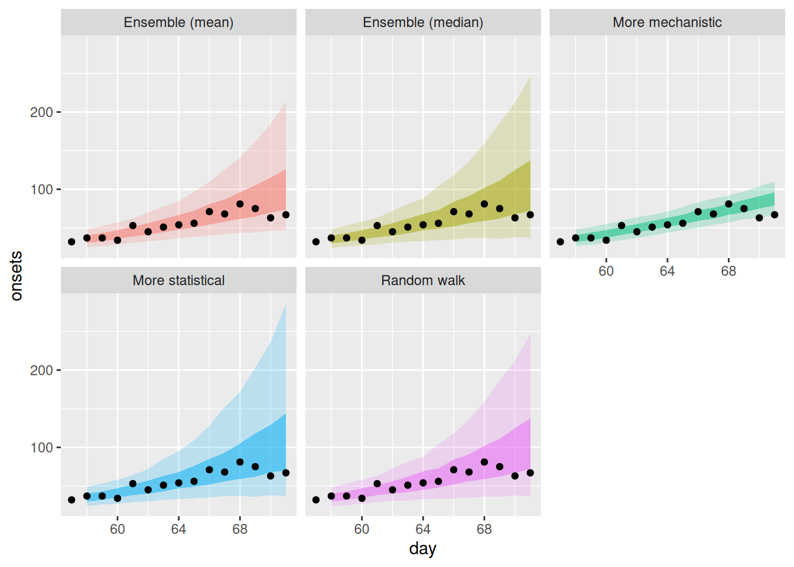
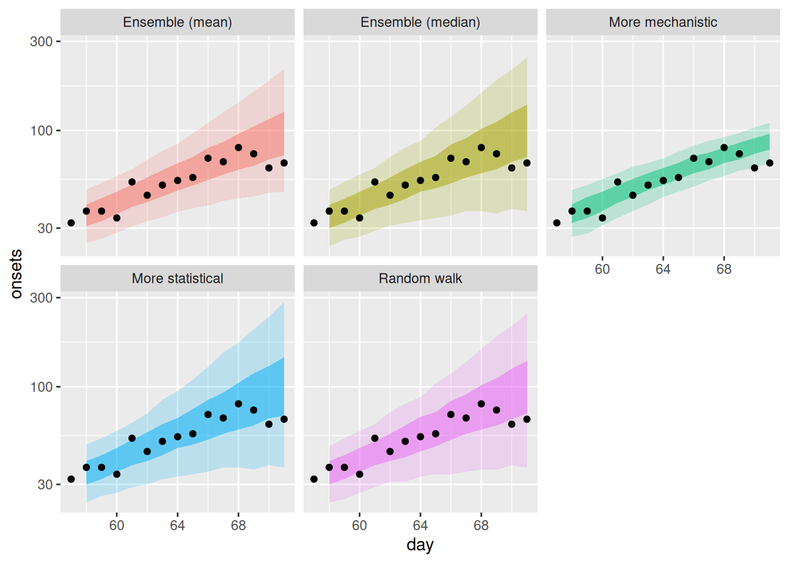
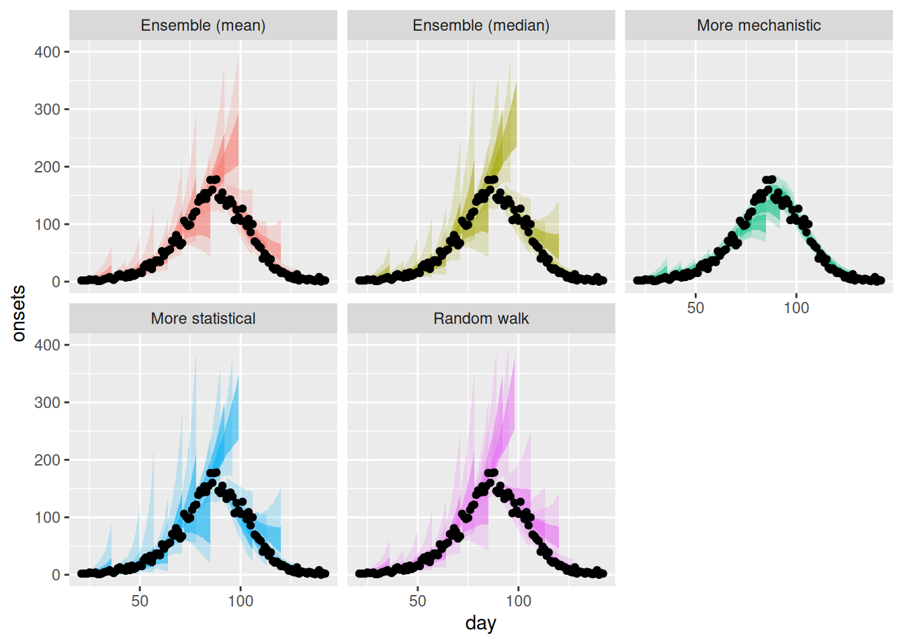
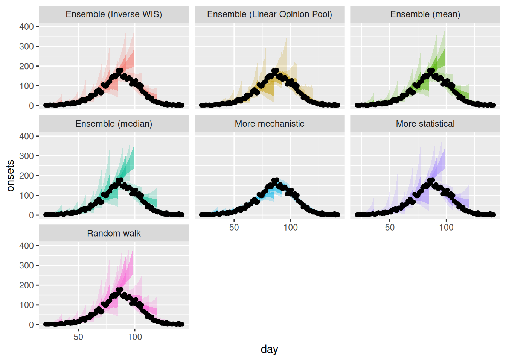
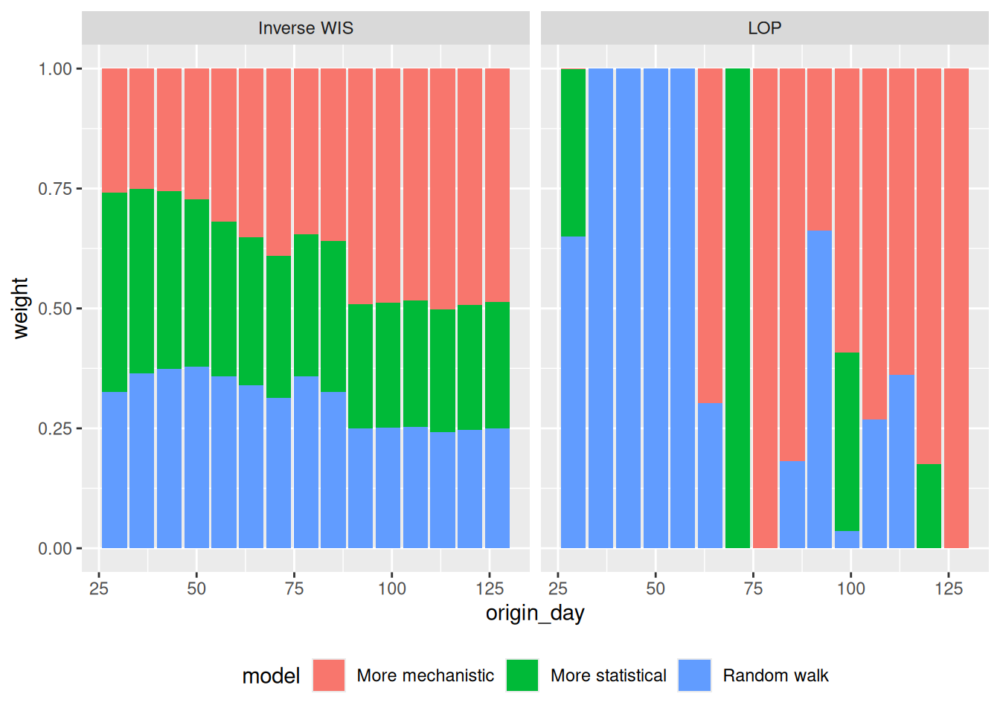

library("iddconf2026")
library("dplyr")
library("tidyr")
library("ggplot2")
library("scoringutils")
library("lopensemble")Forecast ensembles
Introduction
As we saw in the forecasting models session, different modelling approaches have different strengths and weaknesses, and we do not usually know in advance which one will produce the best forecast in any given situation. One way to draw strength from a diversity of approaches is to combine forecasts from different models into a forecast ensemble.
In this session, we’ll start with forecasts from the models we explored in the forecasting models session and build ensembles of these models. We will then compare the performance of these ensembles to the individual models and to each other. Last, we’ll return to the question is it any good?, considering how an ensemble might be good for different users and use-cases.
Slides
Objectives
The aim of this session is to introduce the concept of ensembles of forecasts and to evaluate the performance of ensembles of the models we explored in the forecasting models session.
NoteSetup
Source file
The source file of this session is located at sessions/forecast-ensembles.qmd.
Libraries used
In this session we will use the iddconf2026 package to load a data set of infection times and forecasts, the dplyr and tidyr packages for data wrangling, the ggplot2 library for plotting and the scoringutils package for evaluating forecasts. We will also use lopensemble for mixture ensembles (also called linear opinion pool).
Tip
The best way to interact with the material is via the Visual Editor of RStudio.
Initialisation
We set a random seed for reproducibility. Setting this ensures that you should get exactly the same results on your computer as we do.
set.seed(123)
NoteRepresentations of probabilistic forecasts
Probabilistic predictions can be described as coming from a probability distribution. In general, and when using complex models such as the ones in this course, these distributions cannot be expressed in a simple analytical form. Instead, we typically use a limited number of samples generated from Monte-Carlo methods to represent the predictive distribution. However, this is not the only way to characterise a distribution.
A quantile is the value that corresponds to a given quantile level of a distribution. For example, the median is the 50th quantile: 50% of the distribution lies below it. If we characterise a predictive distribution by its quantiles, we specify these values at a range of quantile levels, e.g. from 5% to 95% in 5% steps.
Many collaborative forecasting projects and so-called forecasting hubs use quantile-based representations of forecasts, in the hope of characterising both the centre and the tails of the distribution reliably and with less demand on storage than a sample-based representation.
Individual forecast models
We will use the forecasts from the models we explored in the forecasting models session. They share the same renewal-with-delays structure but use different models for the evolution of the reproduction number over time:
- A random walk model, the baseline model (
rw_forecasts) - A differenced autoregressive model referred to as “More statistical” (
stat_forecasts) - A simple model of susceptible depletion referred to as “More mechanistic” (
mech_forecasts)
The precise details of the models are not critical to what we are doing here. As in the session on forecast evaluation, we fitted these models to a range of forecast dates so you don’t have to wait for them to fit.
data(rw_forecasts, stat_forecasts, mech_forecasts)
forecasts <- bind_rows(
rw_forecasts,
mutate(stat_forecasts, model = "More statistical"),
mutate(mech_forecasts, model = "More mechanistic")
)
forecasts# A tibble: 672,000 × 7
day .draw .variable .value horizon origin_day model
<dbl> <int> <chr> <dbl> <int> <dbl> <chr>
1 23 1 forecast 9 1 22 Random walk
2 23 2 forecast 5 1 22 Random walk
3 23 3 forecast 5 1 22 Random walk
4 23 4 forecast 3 1 22 Random walk
5 23 5 forecast 5 1 22 Random walk
6 23 6 forecast 6 1 22 Random walk
7 23 7 forecast 3 1 22 Random walk
8 23 8 forecast 2 1 22 Random walk
9 23 9 forecast 2 1 22 Random walk
10 23 10 forecast 4 1 22 Random walk
# ℹ 671,990 more rowsWe also load the saved dataset of observed onsets to compare the forecasts against.
data(onset_df)
head(onset_df)# A tibble: 6 × 3
day onsets infections
<dbl> <int> <int>
1 1 0 0
2 2 0 1
3 3 0 0
4 4 0 2
5 5 0 1
6 6 1 1
TipHow did we generate these forecasts?
We generated these forecasts using the code in data-raw/generate-example-forecasts.r. Some important things to note about them:
- We used a 14 day forecast horizon.
- Each forecast used all the data up to the forecast date.
- We generated 1000 predictive posterior samples for each forecast.
- We started forecasting 3 weeks into the outbreak and then forecast every 7 days until the end of the data (excluding the last 14 days to allow a full forecast).
- We fit the models to the same saved outbreak data (
onset_df) that we loaded above, generated by the code indata-raw/generate-onsets.r.
Forecast ensembles
We will now move to creating forecasts as a combination of multiple forecasts. This procedure is also sometimes called stacking, and the resulting forecasts are said to come from ensembles of forecast models.
Quantile-based ensembles
We first consider forecasts based on the individual quantiles of each model. This treats each model as an uncertain estimate of a single true predictive distribution. By averaging across models, we aim for a better estimate of that distribution than any single model gives. If we believe some models are better than others, we can create a weighted version of this average.
Converting sample-based forecasts to quantile-based forecasts
We will think about forecasts in terms of quantiles, so we first convert our sample-based forecasts to quantile-based ones. We do this by focusing on the marginal distribution at each time point: we treat each time point as independent and calculate quantiles from the sample trajectories at that point. The {scoringutils} package makes this easy. First we declare the forecasts as sample forecasts.
sample_forecasts <- forecasts |>
left_join(onset_df, by = "day") |>
filter(!is.na(.value)) |>
as_forecast_sample(
forecast_unit = c("origin_day", "horizon", "model", "day"),
observed = "onsets",
predicted = ".value",
sample_id = ".draw"
)
sample_forecastsForecast type: sampleForecast unit:origin_day, horizon, model, and day
sample_id predicted observed origin_day horizon model day
<int> <num> <int> <num> <int> <char> <num>
1: 1 9 2 22 1 Random walk 23
2: 2 5 2 22 1 Random walk 23
3: 3 5 2 22 1 Random walk 23
4: 4 3 2 22 1 Random walk 23
5: 5 5 2 22 1 Random walk 23
---
671996: 996 4 3 127 14 More mechanistic 141
671997: 997 2 3 127 14 More mechanistic 141
671998: 998 1 3 127 14 More mechanistic 141
671999: 999 2 3 127 14 More mechanistic 141
672000: 1000 1 3 127 14 More mechanistic 141Then we convert to quantile forecasts.
quantile_forecasts <- sample_forecasts |>
as_forecast_quantile()
quantile_forecastsForecast type: quantileForecast unit:origin_day, horizon, model, and day
observed origin_day horizon model day quantile_level
<int> <num> <int> <char> <num> <num>
1: 2 22 1 Random walk 23 0.05
2: 2 22 1 Random walk 23 0.25
3: 2 22 1 Random walk 23 0.50
4: 2 22 1 Random walk 23 0.75
5: 2 22 1 Random walk 23 0.95
---
3356: 3 127 14 More mechanistic 141 0.05
3357: 3 127 14 More mechanistic 141 0.25
3358: 3 127 14 More mechanistic 141 0.50
3359: 3 127 14 More mechanistic 141 0.75
3360: 3 127 14 More mechanistic 141 0.95
predicted
<num>
1: 1
2: 2
3: 3
4: 5
5: 8
---
3356: 0
3357: 2
3358: 3
3359: 4
3360: 6
TipWhat is happening here?
- Internally
scoringutilscalculates the quantiles of the sample-based forecasts. - It uses a set of default quantile levels, which the user can override.
- It calls base R’s
quantile()function, estimating the value at each quantile level by ordering the samples and taking the value at the appropriate position.
Simple unweighted ensembles
A good place to start is to take the mean or median across models at each quantile level, and treat the result as the quantiles of the ensemble. The median is preferred when outlier forecasts are likely, as it is less sensitive to them. The mean is preferred when we want models that diverge from the middle to still pull the ensemble.
NoteVincent average
Calculating quantiles of a new distribution as an average of the quantiles of its constituents is called a Vincent average, after the biologist Stella Vincent, who described it in 1912 when studying the role of whiskers in the behaviour of white rats.
Construction
We calculate the mean quantile ensemble by taking the mean of the forecasts at each quantile level.
mean_ensemble <- quantile_forecasts |>
as_tibble() |>
summarise(
predicted = mean(predicted),
observed = unique(observed),
model = "Ensemble (mean)",
.by = c(origin_day, horizon, quantile_level, day)
)Similarly, the median ensemble takes the median at each quantile level.
median_ensemble <- quantile_forecasts |>
as_tibble() |>
summarise(
predicted = median(predicted),
observed = unique(observed),
model = "Ensemble (median)",
.by = c(origin_day, horizon, quantile_level, day)
)We combine the ensembles with the individual forecasts to make visualisation easier.
simple_ensembles <- bind_rows(
mean_ensemble,
median_ensemble,
quantile_forecasts
)Visualisation
How do these ensembles differ from the individual models? We start by plotting a single forecast from each.
plot_ensembles <- function(data, obs_data) {
data |>
pivot_wider(names_from = quantile_level, values_from = predicted) |>
ggplot(aes(x = day)) +
geom_ribbon(
aes(
ymin = .data[["0.05"]], ymax = .data[["0.95"]], fill = model,
group = origin_day
),
alpha = 0.2
) +
geom_ribbon(
aes(
ymin = .data[["0.25"]], ymax = .data[["0.75"]], fill = model,
group = origin_day
),
alpha = 0.5
) +
geom_point(
data = obs_data,
aes(x = day, y = onsets), color = "black"
) +
scale_color_binned(type = "viridis") +
facet_wrap(~model) +
theme(legend.position = "none")
}
plot_single_forecasts <- simple_ensembles |>
filter(origin_day == 57) |>
plot_ensembles(onset_df |> filter(day >= 57, day <= 57 + 14))
plot_single_forecasts
The log scale gives another perspective.
plot_single_forecasts +
scale_y_log10()
Now the full range of forecasts from each model and ensemble.
plot_multiple_forecasts <- simple_ensembles |>
plot_ensembles(onset_df |> filter(day >= 21)) +
lims(y = c(0, 400))
plot_multiple_forecastsWarning: Removed 17 rows containing missing values or values outside the scale range
(`geom_ribbon()`).Warning: Removed 1 row containing missing values or values outside the scale range
(`geom_ribbon()`).
TipTake 2 minutes
How do these ensembles compare to the individual models? How do they differ from each other, and are there any differences across forecast dates?
NoteSolution
How do these ensembles compare to the individual models?
- Both simple ensembles appear to be less variable than the statistical models but more variable than the mechanistic model.
- Both ensembles are more like the statistical models than the mechanistic model.
How do they differ from each other, and are there any differences across forecast dates?
- The mean ensemble has slightly tighter uncertainty than the median ensemble.
- The mean ensemble is more variable across forecast dates, especially after the peak of the outbreak.
Evaluation
As in the forecast evaluation session, we score the ensembles with the {scoringutils} score() function.
ensemble_scores <- simple_ensembles |>
as_forecast_quantile(forecast_unit = c("origin_day", "horizon", "model")) |>
score()
Note
The weighted interval score (WIS) (Bracher et al. 2021) is a proper scoring rule for quantile forecasts that approximates the Continuous Ranked Probability Score (CRPS) by a weighted sum of prediction intervals. As the number of intervals increases, the WIS converges to the CRPS, combining sharpness with penalties for over- and under-prediction.
We use it here because we are scoring quantiles, not samples, so we cannot use the CRPS directly as we did before.
TipInteractive: WIS → CRPS
Add prediction intervals and watch the WIS converge to the CRPS, with the same dispersion / over / under split.
TipInteractive: interval coverage
A calibration check for quantile forecasts: does a 90% prediction interval actually contain the truth 90% of the time?
We start with a high-level overview of the scores by model:
ensemble_scores |>
summarise_scores(by = c("model")) model wis overprediction underprediction dispersion
<char> <num> <num> <num> <num>
1: Ensemble (mean) 8.628868 4.231548 1.2080060 3.189314
2: Ensemble (median) 10.609562 5.790268 1.3968750 3.422420
3: Random walk 11.882241 7.029196 0.7986607 4.054384
4: More statistical 11.251094 5.559643 1.8905357 3.800915
5: More mechanistic 6.165321 1.842679 2.6100000 1.712643
bias interval_coverage_50 interval_coverage_90 ae_median
<num> <num> <num> <num>
1: 0.238839286 0.5223214 0.8750000 13.206845
2: 0.152678571 0.5580357 0.8750000 16.174107
3: 0.246428571 0.5625000 0.8660714 18.044643
4: 0.004910714 0.5401786 0.8660714 17.303571
5: 0.266071429 0.4107143 0.7633929 9.620536
TipTake 2 minutes
What do you think the scores are telling you? Which model do you think is best? What other scoring breakdowns might you want to look at?
NoteSolution
What do you think the scores are telling you? Which model do you think is best?
- The mean ensemble appears to be the best performing ensemble model overall.
- However, the more mechanistic model remains the single best model among any.
What other scoring breakdowns might you want to look at?
- There might be variation between the performance of different ensemble methods over different forecast dates, or the length of forecast horizon.
Weighted ensembles
The simple mean and median treat every model the same. We could instead weight the models, for example giving more weight to those that have forecast well. As the crudest option, filtering simply drops a poorly performing model, which is equivalent to giving it a weight of zero.
Let’s look at two common weighting methods:
- Inverse WIS weighting:
- Use: weight each model by the inverse of its past WIS. Simple to understand and implement; relies on the hope that giving more weight to better past performers yields a better ensemble.
- Interpretation: each componennt model provides a different uncertain estimates of a true distribution of a given shape.
- A linear opinion pool (LOP):
- Use: weights are tuned to optimise the CRPS from samples, creating a weighted mixture of the models’ distributions.
- Interpretation: each component model is a competing version of the truth among multiple possible versions, with weights assigned to each representing the probability of each one being the true one.
TipTake 5 minutes: work in pairs
Pair up and take one method each to make sense of. Note that if you are runnning code interactively, you will still need to run each code chunk.
- Partner A: follow the inverse WIS weighting and be ready to explain how its weights are set.
- Partner B: follow the linear opinion pool and be ready to explain how its weights are set.
Compare the weights plot and score tables that follow: do the two weighting methods agree, and does either clearly beat the simple ensembles?
Inverse WIS weighting
We first need the WIS for each model, which we already have. We weight by the inverse WIS over the period before each forecast, so we only use information available at the time.
model_scores <- quantile_forecasts |>
score()
cumulative_scores <- list()
## filter for scores up to the origin day of the forecast
for (day_by in unique(model_scores$origin_day)) {
cumulative_scores[[as.character(day_by)]] <- model_scores |>
filter(origin_day < day_by) |>
summarise_scores(by = "model") |>
mutate(day_by = day_by)
}
weights_per_model <- bind_rows(cumulative_scores) |>
select(model, day_by, wis) |>
mutate(inv_wis = 1 / wis) |>
mutate(
inv_wis_total_by_date = sum(inv_wis), .by = day_by
) |>
mutate(weight = inv_wis / inv_wis_total_by_date) |> ## normalise
select(model, origin_day = day_by, weight)
weights_per_model |>
pivot_wider(names_from = model, values_from = weight)# A tibble: 15 × 4
origin_day `Random walk` `More statistical` `More mechanistic`
<dbl> <dbl> <dbl> <dbl>
1 29 0.326 0.415 0.258
2 36 0.364 0.385 0.250
3 43 0.374 0.370 0.255
4 50 0.378 0.349 0.273
5 57 0.358 0.322 0.320
6 64 0.339 0.309 0.352
7 71 0.314 0.296 0.391
8 78 0.359 0.297 0.345
9 85 0.327 0.313 0.360
10 92 0.250 0.259 0.492
11 99 0.252 0.261 0.488
12 106 0.253 0.263 0.484
13 113 0.242 0.255 0.503
14 120 0.246 0.261 0.493
15 127 0.250 0.264 0.486We apply the weights, using weights from two weeks before each forecast date to inform each ensemble.
inverse_wis_ensemble <- quantile_forecasts |>
as_tibble() |>
left_join(
weights_per_model |>
mutate(origin_day = origin_day + 14),
by = c("model", "origin_day")
) |>
# assign equal weights if no weights are available
mutate(weight = ifelse(is.na(weight), 1 / n_distinct(model), weight)) |>
summarise(
predicted = sum(predicted * weight),
observed = unique(observed),
model = "Ensemble (Inverse WIS)",
.by = c(origin_day, horizon, quantile_level, day)
)Linear opinion pool
We can build a weighted mixture of models’ distributions, with sample weights tuned to optimise the CRPS, using the lopensemble package.
Fitting the mixture weights optimises for every forecast date, which is slow with 1000 samples. For demonstration here, we’ll thin to 200 samples per forecast: this is about four times faster and gives essentially the same weights.
## lopensemble expects a "date" column indicating the timing of forecasts
## thin to 200 samples per forecast to speed up weight estimation
lop_forecasts <- sample_forecasts |>
as_tibble() |>
filter(sample_id <= 200) |>
rename(date = day)
lop_by_forecast <- function(
sample_forecasts,
forecast_dates,
group = c("target_end_date"),
...
) {
lapply(forecast_dates, \(x) {
y <- sample_forecasts |>
mutate(target_end_date = x) |>
dplyr::filter(origin_day <= x) |>
dplyr::filter(origin_day >= x - (3 * 7 + 1)) |>
dplyr::filter(origin_day == x | date <= x)
lop <- mixture_from_samples(y) |>
filter(date > x) |>
mutate(origin_day = x)
return(lop)
})
}
forecast_dates <- quantile_forecasts |>
as_tibble() |>
pull(origin_day) |>
unique()
lop_ensembles_obj <- lop_by_forecast(
lop_forecasts,
forecast_dates[-1]
)
lop_weights <- seq_along(lop_ensembles_obj) |>
lapply(\(i) attr(lop_ensembles_obj[[i]], "weights") |>
mutate(origin_day = forecast_dates[i + 1])
) |>
bind_rows()
## combine and generate quantiles from the resulting samples
lop_ensembles <- lop_ensembles_obj |>
bind_rows() |>
mutate(model = "Ensemble (Linear Opinion Pool)") |>
rename(day = date) |> ## rename column back for later plotting
as_forecast_sample() |>
as_forecast_quantile()
TipInteractive: opinion pool vs quantile averaging
Average probabilities (opinion pool) vs quantiles (Vincent) — and watch them diverge.
Compare the different ensembles
We collect the weighted ensembles alongside the simple ensembles.
weighted_ensembles <- bind_rows(
inverse_wis_ensemble,
lop_ensembles,
simple_ensembles
)Visualisation
A range of forecasts from each model and ensemble:
plot_multiple_weighted_forecasts <- weighted_ensembles |>
plot_ensembles(onset_df |> filter(day >= 21)) +
lims(y = c(0, 400))
plot_multiple_weighted_forecastsWarning: Removed 18 rows containing missing values or values outside the scale range
(`geom_ribbon()`).Warning: Removed 1 row containing missing values or values outside the scale range
(`geom_ribbon()`).
Model weights
We can compare the weights each method assigns to each model over time.
weights <- rbind(
weights_per_model |> mutate(method = "Inverse WIS"),
lop_weights |> mutate(method = "LOP")
)
weights |>
ggplot(aes(x = origin_day, y = weight, fill = model)) +
geom_col(position = "stack") +
facet_grid(~ method) +
theme(legend.position = "bottom")
TipTake 2 minutes
Compare notes with the person next to you.
Are the weights assigned to models different between the three methods? How do the weights change over time? Are you surprised by the results given what you know about the models performance?
NoteSolution
Are the weights assigned to models different between the methods?
- There are major differences especially early on, where the LOP ensemble prefers the random walk model.
- The inverse WIS model transitions from fairly even weights early on to giving most weight to the mechanistic model, however it does so in a more balanced manner than the optimised ensemble, giving substantial weight to all three models.
How do the weights change over time?
- Early on the more statistical models have higher weights in the respective ensemble methods.
- Gradually the mechanistic model gains weight in both models and by the end of the forecast horizon it represents the entire ensemble.
Are you surprised by the results given what you know about the models performance?
- As the random walk model is performing poorly, you would expect it to have low weights but actually it often doesn’t. This implies that its poor performance is restricted to certain parts of the outbreak.
- The mechanistic model performs really well overall and dominates the final optimised ensemble.
Evaluation
Finally we evaluate the accuracy of the weighted ensembles. We drop the first two weeks, which the weighted methods cannot forecast as they need training data.
weighted_ensemble_scores <- weighted_ensembles |>
filter(origin_day >= 29) |>
as_forecast_quantile(forecast_unit = c("origin_day", "horizon", "model")) |>
score()
weighted_ensemble_scores |>
summarise_scores(by = c("model")) model wis overprediction underprediction
<char> <num> <num> <num>
1: Ensemble (Inverse WIS) 8.624895 4.057103 1.2679494
2: Ensemble (Linear Opinion Pool) 7.164976 1.322476 2.8571429
3: Ensemble (mean) 8.990511 4.390032 1.2885397
4: Ensemble (median) 11.097429 6.044857 1.4900000
5: Random walk 12.454090 7.366381 0.8519048
6: More statistical 11.828181 5.867429 2.0165714
7: More mechanistic 6.298214 1.758381 2.7840000
dispersion bias interval_coverage_50 interval_coverage_90 ae_median
<num> <num> <num> <num> <num>
1: 3.299842 0.22857143 0.5142857 0.8571429 13.227348
2: 2.985357 0.07666667 0.5285714 0.8714286 10.926190
3: 3.311940 0.20142857 0.5380952 0.8761905 13.722222
4: 3.562571 0.11380952 0.5714286 0.8761905 16.871429
5: 4.235805 0.21380952 0.5761905 0.8666667 18.866667
6: 3.944181 -0.03142857 0.5238095 0.8571429 18.200000
7: 1.755833 0.22523810 0.4285714 0.7714286 9.804762Remembering the forecast evaluation session, we should also check performance on the log scale.
log_ensemble_scores <- weighted_ensembles |>
filter(origin_day >= 29) |>
as_forecast_quantile(forecast_unit = c("origin_day", "horizon", "model")) |>
transform_forecasts(
fun = log_shift,
offset = 1,
append = FALSE
) |>
score()
log_ensemble_scores |>
summarise_scores(by = c("model")) model wis overprediction underprediction
<char> <num> <num> <num>
1: Ensemble (Inverse WIS) 0.1659235 0.07994086 0.02230618
2: Ensemble (Linear Opinion Pool) 0.1710106 0.06852277 0.03336480
3: Ensemble (mean) 0.1664426 0.07739888 0.02492698
4: Ensemble (median) 0.1851968 0.07841122 0.03445044
5: Random walk 0.1954142 0.09031636 0.02895397
6: More statistical 0.2148337 0.06563032 0.06554686
7: More mechanistic 0.1738155 0.10817542 0.02468000
dispersion bias interval_coverage_50 interval_coverage_90 ae_median
<num> <num> <num> <num> <num>
1: 0.06367642 0.22857143 0.5142857 0.8571429 0.2535382
2: 0.06912298 0.07666667 0.5285714 0.8714286 0.2609560
3: 0.06411670 0.20142857 0.5380952 0.8761905 0.2541089
4: 0.07233514 0.11380952 0.5714286 0.8761905 0.2797826
5: 0.07614388 0.21380952 0.5761905 0.8666667 0.2935602
6: 0.08365652 -0.03142857 0.5238095 0.8571429 0.3286224
7: 0.04096012 0.22523810 0.4285714 0.7714286 0.2690851The best weighted ensembles only slightly outperform the simple mean, and sometimes do worse.
NoteFine-tuning weights
Any weighting method you use requires a trade-off: how much to optimise for past performance, versus how much to allow that a currently poor model may recover. For example, some choices might be:
- How many past forecasts do you weight over? More history stabilises the weights but is slower to adapt; less history adapts quickly but is noisier.
- Which period counts as relevant? All time, or only recent weeks — this trades off responsiveness against stability.
- How flexible should the weights be? Whether to use weights per-model, per-horizon, or per-quantile; each added degree of freedom can improve the fit on past data but risks overfitting the future.
NoteQuantile Regression Averaging
Quantile regression averaging (QRA) treats ensemble weighting as a regression problem. QRA fits the model weights directly against past observed outcomes to optimise the score. Because it is a regression, it can even fit a separate set of weights for each forecast horizon (or even each quantile), letting the ensemble trust different models at short versus long horizons. Where the linear opinion pool mixes the models’ full distributions, QRA works directly on their quantiles.
It is available in the qrensemble package. The code below fits a QRA ensemble for each forecast date, using up to 3 weeks of previous forecasts, but is left unevaluated here for self-study.
qra_by_forecast <- function(
quantile_forecasts,
forecast_dates,
group = c("target_end_date"),
...
) {
lapply(forecast_dates, \(x) {
quantile_forecasts |>
mutate(target_end_date = x) |>
dplyr::filter(origin_day <= x) |>
dplyr::filter(origin_day >= x - (3 * 7 + 1)) |>
dplyr::filter(origin_day == x | day <= x) |>
qrensemble::qra(
group = group,
target = c(origin_day = x),
...
)
})
}
## a single optimised ensemble, shared across all horizons
qra_ensembles_obj <- qra_by_forecast(
quantile_forecasts,
forecast_dates[-1],
group = c("target_end_date")
)
## or a separate optimised ensemble per forecast horizon
qra_by_horizon_obj <- qra_by_forecast(
quantile_forecasts,
forecast_dates[-c(1:2)],
group = c("horizon", "target_end_date")
)
NoteThe forecast combination puzzle
Ensembles do tend to beat their component models in predictive accuracy. But it is very hard to beat a simple, equally weighted average, even with more sophisticated weighting procedures (Amaral et al. 2025). This is known as the “forecast combination puzzle”. It’s because weights have to be estimated, and that estimation is itself uncertain, especially with few past forecasts. A good working prior is that equal weights are hard to beat.
What are ensembles good for?
So far, we’ve explored the value of using ensembles in our own forecasting workflow. The last ten years has also seen substantial investment in producing ensemble forecasts from many independent modellers (Lutz et al. 2019). At the same time, ensembles may be harder to use than an individual model: harder to explain, slower to produce, and sensitive to the consistency of its component models.
So why worry about ensembles? We could look at their value in two ways:
Note
Ensemble as a product: Ensembles offer consistently more performant forecasts: as in machine learning for example, where even an ensemble of individually weak models can still perform well together. In public health use, an ensemble might be useful as a reliable product that allows decision-makers to focus on a single result rather than interpreting across modellers’ work.
Such gains in reliable predictive accuracy have been the focus of large, open, collaborative projects such as the US Flu Forecast Hub (Lutz et al. 2019) or the European Respicast Hub. This typically involves:
- Creating a standardised, open platform for anyone to contribute
- Collating all models’ output based on minimal validation checks
- Combining in an ensemble, which becomes the focus of public communication
Ensemble as a process: In a single forecasting workflow, the process of creating an ensemble offers a principled way to compare among multiple hypotheses. We could see the ensemble as a meta model that is flexible enough to express the full range of uncertainty in our own model specification.
Among multiple modellers, the coordination required to create an ensemble can create a useful venue for model comparison and broader evidence synthesis. For example, in the UK during COVID-19, the SPI-M-O group of modellers provided consensus equally-averaged forecasts as part of a narrative synthesis of modelling evidence (Medley 2022). This approach typically involves:
- Selective recruitment among known modellers
- Structured opportunities for interaction, including model comparison, identifying differences, and reaching consensus
- Shared ownership of any consensus output
This points us back towards the question of what a forecast is good for: sharp and calibrated, but also trusted, understood, and relevant to the decision at hand.
Going further
- How might the “product” or “process” approaches relate to the ensemble weighting schemes we considered above?
- What are some of the benefits of a product-focused approach compared to a process-focused approach, and vice-versa?
- What are some of the drawbacks and costs of each approach? How could these be mitigated?
- Are there any features of the outbreak setting that might make one approach more appropriate that the other?
Methods in the real world
- Howerton et al. (2023) suggests that the choice of an ensemble method should be informed by an assumption about how to represent uncertainty between models: whether differences between component models is “noisy” variation around a single underlying distribution, or represents structural uncertainty about the system.
- Sherratt et al. (2023) investigates the performance of different ensembles in the European COVID-19 Forecast Hub.
- Amaral et al. (2025) discusses the challenges in improving on the predictive performance of simpler approaches using weighted ensembles.
- Lutz et al. (2019) describes the public health use of ensemble forecasts of influenza in the Unites States.
- Medley (2022) discusses the process of convening a group of independent modelling teams to provide a consensus for UK COVID-19 public health policy.
Wrap up
- Review what you’ve learned in this session with the learning objectives
- Share your questions and thoughts
References
Amaral, André Victor Ribeiro, Daniel Wolffram, Paula Moraga, and Johannes Bracher. 2025. “Post-Processing and Weighted Combination of Infectious Disease Nowcasts.” PLoS Computational Biology 21 (3): e1012836. https://doi.org/10.1371/journal.pcbi.1012836.
Bracher, Johannes, Evan L. Ray, Tilmann Gneiting, and Nicholas G. Reich. 2021. “Evaluating Epidemic Forecasts in an Interval Format.” PLOS Computational Biology 17 (2): e1008618. https://doi.org/10.1371/journal.pcbi.1008618.
Howerton, Emily, Michael C. Runge, Tiffany L. Bogich, et al. 2023. “Context-Dependent Representation of Within- and Between-Model Uncertainty: Aggregating Probabilistic Predictions in Infectious Disease Epidemiology.” Journal of The Royal Society Interface 20 (198): 20220659. https://doi.org/10.1098/rsif.2022.0659.
Lutz, Chelsea S., Mimi P. Huynh, Monica Schroeder, et al. 2019. “Applying Infectious Disease Forecasting to Public Health: A Path Forward Using Influenza Forecasting Examples.” BMC Public Health 19 (1): 1659. https://doi.org/10.1186/s12889-019-7966-8.
Medley, Graham F. 2022. “A Consensus of Evidence: The Role of SPI-M-O in the UK COVID-19 Response.” Advances in Biological Regulation 86 (December): 100918. https://doi.org/10.1016/j.jbior.2022.100918.
Sherratt, Katharine, Hugo Gruson, Rok Grah, et al. 2023. “Predictive Performance of Multi-Model Ensemble Forecasts of COVID-19 Across European Nations.” eLife 12 (April): e81916. https://doi.org/10.7554/eLife.81916.